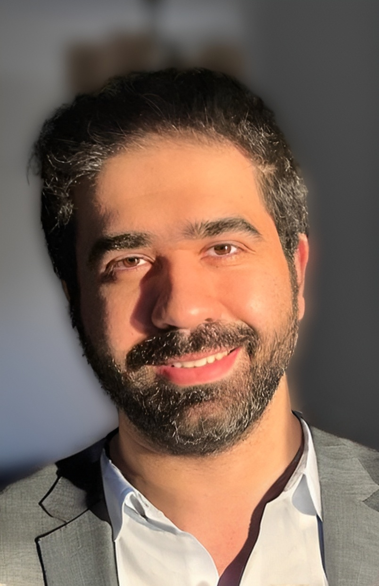

Mahmoud “Nabil” Mahmoud
|  | Associate Professor mnmahmoudATncatDOTedu |

About
Dr. Mahmoud received his Bachelor of Science (BS) and Master of Science (MS) degrees, with honors, in computer engineering from Cairo University, Egypt, in 2012 and 2016, respectively. He completed his PhD in electrical and computer engineering from Tennessee Tech University, Cookeville, Tennessee, in 2019. He is currently an Associate Professor in the Department of Computer Science at The University of Alabama. Prior to this role, he served as an Assistant Professor then Associate Professor in the Department of Electrical and Computer Engineering at North Carolina A&T State University from 2019 to 2025. Dr. Mahmoud is an accomplished researcher and has authored and coauthored numerous publications in prestigious venues. His work has appeared in top journals such as the IEEE Internet of Things Journal, IEEE Transactions on Dependable and Secure Computing (TDSC), IEEE Transactions on Human-Machine Systems, and IEEE Transactions on Mobile Computing, as well as in leading international conferences including the International Conference on Communication, International Conference on Pattern Recognition, and International Conference on Wireless Communication. His research interests span security and privacy in unmanned aerial systems, smart grids, machine learning applications, vehicular ad hoc networks, and blockchain applications. He has secured significant research funding from national agencies and industry partners, including the National Science Foundation (NSF), Department of Transportation (DOT), Air Force Research Laboratory (AFRL), NASA, Intel, Cisco, and Lockheed Martin. Dr. Mahmoud currently serves as an Associate Editor for the IEEE Transactions on Dependable and Secure Computing (TDSC).
Research Interests

My research mainly focuses Trustworthy AI for Resilient Cyber-Physical Systems.
Specific interests are:-
. Smart grid AMI networks
. Machine learning for cybersecurity
. Adversarial machine learning
. Encrypted machine learning
. Blockchain applications
. Self-driven vehicle applications
. Electric vehicle communications
. Vehicular ad hoc networks
. Wireless sensor networks
. Trust and reputation systems
Educational Background
PhD in Department of Electrical and Computer Engineering, Tennessee Tech University
2017 - 2019 MSc in Computer Engineering, Cairo University
MSc in Computer Engineering, Cairo University
2012 - 2016- BSc in Computer Engineering, Cairo University
2007 - 2012
Disclaimer: This page may contain personal archived (pre-print versions) articles published by several publishers. Copyright and all rights therein are retained by authors or by other copyright holders. Personal use of this material is permitted. However, permission to reprint/republish this material for advertising or promotional purposes or for creating new collective works for resale or redistribution to servers or lists, or to reuse any copyrighted component of this work in other works, must be obtained from the copyright holder.